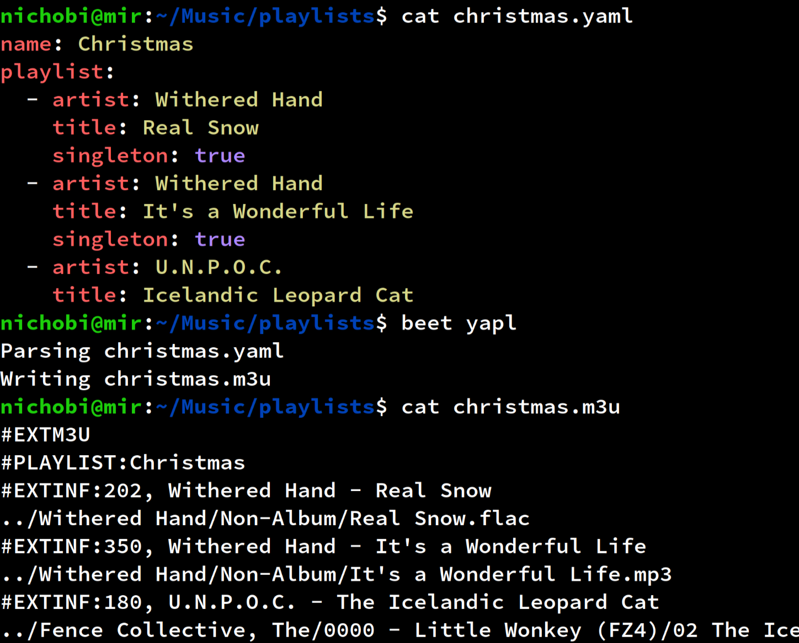

Hello!
I'm Nicholas Boyd Isacsson, also known as nichobi, and this is my webpage to serve as a hub for all my projects and various other interests. Since 2016 I've had a keen interest in functional programming, first awakened by Scala and lately also in Haskell. Most of my projects tend to be terminal-based utilities for my Linux server, and usually based around some concept I want to improve my skills at.Look below for quick overviews on some of my projects, and follow the links to github for further details.
Scalarr [git]

Scalarr is a command line tool for communicating with Sonarr, written in Scala.
I initially developed it to get the hang of REST APIs and IO monads, for which I made heavy use of ZIO.
beets-yapl [git]
beets-yapl (yaml playlist) is a plugin for the beets media manager. It was built out of frustration with the M3U playlist format, which breaks at the slightest change in filepaths. After years of fruitless searching for a better playlist format, I realised I was going to have to invent one myself. I ended up finding yaml to be an excellent starting point, with a clear and concise syntax, and from there I just needed to decide how playlist were expressed. Leveraging beets' powerful query engine, songs can be described as a list of fields and values, consisting of whatever metadata required to unambiguously pinpoint a single file in the library. beets-yapl will then generate M3U playlists to be used in any music software.
sponsorblockcast [git]
A POSIX shell script that monitors all Chromecasts on the local network and automatically skips past any sponsored or otherwise unwanted segments of Youtube videos, using the SponsorBlock API.It was inspired by CastBlock but rewritten from scratch to avoid some of its pitfalls, allowing for much greater performance and poll rates as well as extra features and configuration.
ASCII Art [git]
I dabble in ascii art, see my ascii site for my full, ever expanding page of drawings or check out the Github repo to see more details about the website.
wordle [git]

I wrote a terminal clone of the popular daily word guessing game Wordle by powerlanguage. It uses the same daily word as the original website, so everyone gets the same word each day!
It's written in Haskell and uses the terminal UI library brick for its interface.